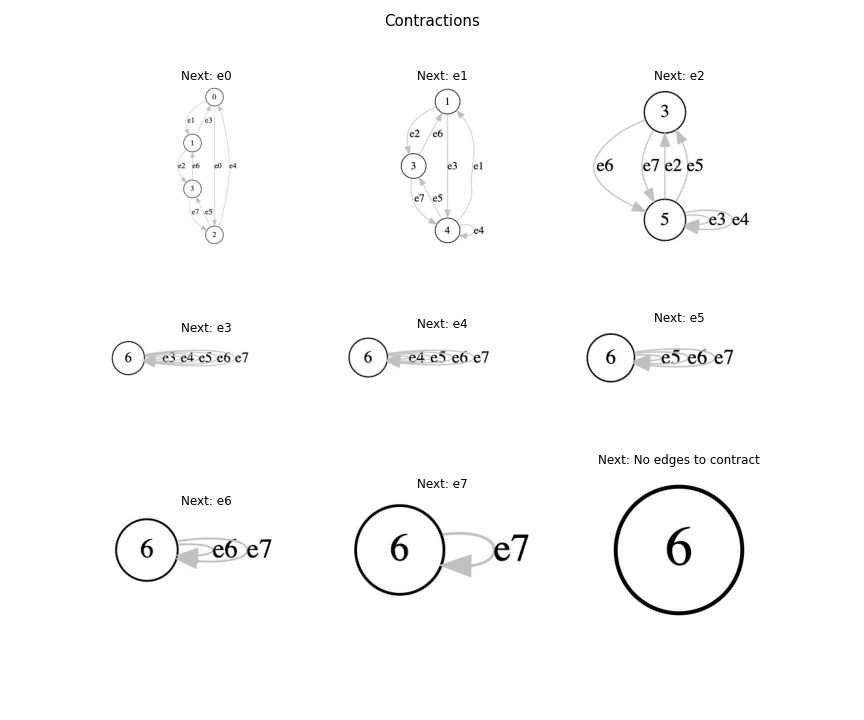
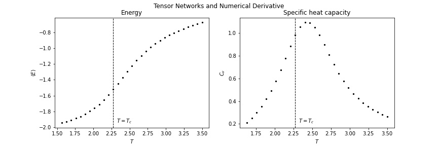
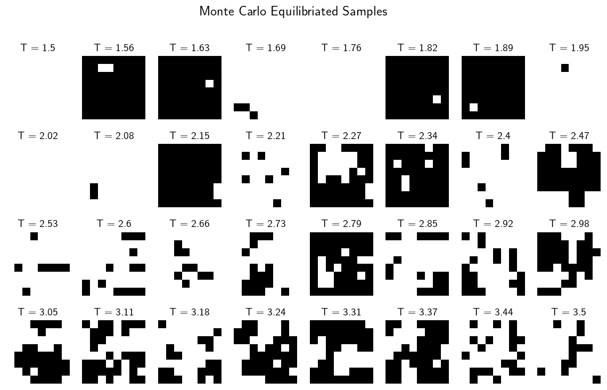
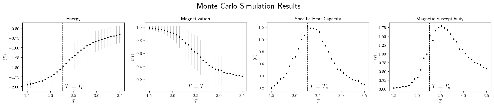
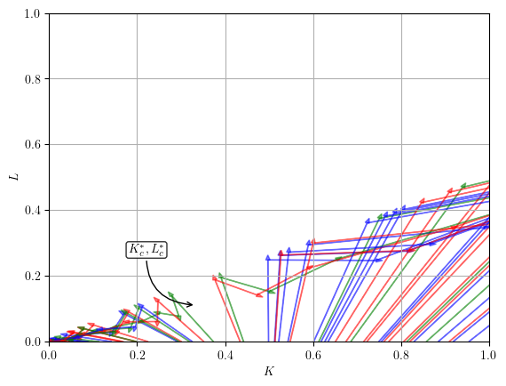
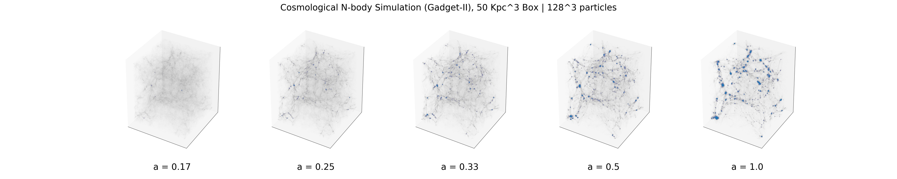
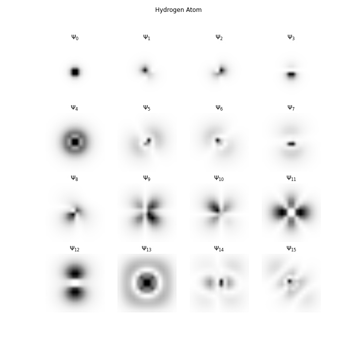
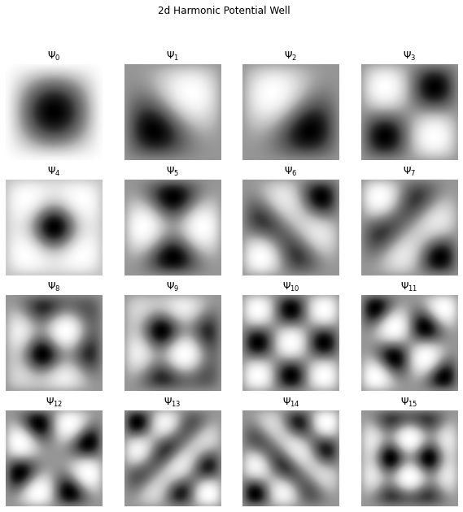

Symmetries of a PDE are transformations that map solutions to solutions. Noether's theorem states that symmetries that preserve the action integral map one to one to conservation laws. Often what does not change (the conserved quantities) gives us more insight when we model what does change (the fields). Most fundamental physics equations are conservation laws.
My MSc thesis involved computing the point symmetries and conservation laws (via Noether's theorem) of the exact equations of motion of an elastic string. The literature on this topic can be sparse and confusing. But simply put, the answer is not the linear wave equation. When we enforce the physics principles for an elastic string, the final equation takes the form
$$ \partial_t^2 \vec{r}(x,t) = \partial_x \left( T (\lambda) \, \widehat{\partial_x \vec{r}}(x,t) \right)$$
where \( \vec{r}(x,t) \) is the position of a string element at time \( t \) that starts at arc-length \( x \) on the reference configuration (can be flat or curved), \( T(\lambda) \) is the tension as a function of the stretch \( \lambda = |\partial_x \vec{r}(x,t)| - 1 \), and \( \widehat{\partial_x \vec{r}}(x,t) \) is the unit tangent vector in the current configuration.
For detailed derivations of the string equation, its characteristic curves, and the symmetries and conservation laws admitted by this equation along with their physical interpretations, see my thesis:
Extending this equation to two dimensions to describe the motion of a membrane (like a piece of cloth) turns out to be even more tricky. More on that in the near future.
In 2021, I wrote a patent landscape study report for Relecura Technologies, analyzing around 50k patents in quantum technologies using natural language processing tools, aimed at policymakers and investors.
The Navier-Stokes equations (mass, momentum, and energy continuity equations for fluids) can describe phenomena ranging from a stirred cup of coffee to the earth's climate. Predicting the fluid flow is challenging even with the complete knowledge of initial conditions. Numerical algorithms require massive parallelization to be of use and there are pesky numerical instabilities to deal with.
I studied the driven lid cavity problem (think of a 2D box stirred from the top edge) for my MSc thesis using the Lattice Boltzmann method (LBM). LBM is a numerical scheme stemming from kinetic theory using a discretized version of the Boltzmann equation with an ad-hoc collision operator defined to emulate fluid behavior. Since it only uses array movements and arithmetic operations, LBM is economical. The algorithm is well-suited for the low Reynolds number regime where the LBM approximation is more faithful.
I did an independent research project in statistical mechanics that explores how macroscopic physics emerges from microscopic rules, specifically analyzing phase transitions in the 2D Ising model. I utilize three distinct computational and analytical approaches to evaluate the partition function and system thermodynamics:
Representing the partition function as a Tensor Network (TN), the calculation changes to a series of tensor contractions. Here I test a TN contraction library I wrote from scratch on the 2D Ising model.
The following tensor network contraction gives the partition function for the Ising Hamiltonian on a $2x2$ lattice with periodic boundary conditions (full contraction of larger networks takes a long time).

We can see that the code works by checking thermodynamic variables (these results are exact).

We drive random spin configurations toward equilibrium to sample states and calculate expected energy and magnetization.
Results can be compared against a Monte Carlo simulation. See Ising Model for the results of an \( 8\times8 \) lattice:


Here we numerically (easily done analytically for the 1D model) analyze the flow of effective coupling constants through real-space decimation to estimate the number of phases.
First, let us use the 1D Ising model defined by the Hamiltonian
$$ H = -J \sum_{i} s_i s_{i+1},$$
where \( s_i = \pm 1 \) are the spin variables and \( J \) is the coupling constant, to illustrate the RG flow.
The partition function is given by
$$ Z = \sum_{\{s_i\}} e^{-\beta H} = \sum_{\{s_i\}} \prod_{i} e^{\beta J s_i s_{i+1}}.$$
The idea is to delete every other spin while keeping \( Z \) invariant. This leads to a new effective Hamiltonian with a renormalized coupling constant \( J' \). We can easily show that \( J \) flows to two trivial fixed points: \( J = 0 \) (high temperature, disordered phase) and \( J = \infty \) (low temperature, ordered phase). This is one way to see that the 1D Ising model has no phase transition.
Although the 1D Ising model is exactly solvable, the RG flow provides a more intuitive picture of the physics, which is especially useful for higher-dimensional models where exact solutions are not available. In the 2D Ising model, the RG flow reveals a non-trivial fixed point corresponding to the critical temperature, indicating the presence of a phase transition. The flow diagram below illustrates this behavior, showing how the coupling constant evolves under successive RG transformations. Unlike the 1D case, adjusting \( J \) will not keep \( Z \) constant. But in terms of two parameters \( K \) and \( L \), we can re-parametrize the problem such that the RG flow is well-defined. The flow diagram shows that there are two stable fixed points corresponding to the ordered and disordered phases, and an unstable fixed point corresponding to the critical point of the phase transition.

References:- F. Schwabl and W.D. Brewer. Statistical Mechanics. Advanced Texts in Physics. Springer Berlin Heidelberg, 2006. ISBN: 9783540323433.
- Humphrey J. Maris and Leo P. Kadanoff. "Teaching the renormalization group". In: American Journal of Physics 46.6 (1978), pp. 652–657.

Ordinary matter cannot aggregate gravitationally to form structures due to immense radiation pressure until the universe cools down considerably. However, dark matter interacts exclusively via gravity. This property allows it to form bound structures in the early universe, effectively creating gravitational potential wells for ordinary matter to fall in later when the universe cools down.
Understanding the nature of primordial fluctuations—-the seed of all structures in the universe—-is a fundamental problem in modern physics. A primary tool for studying this evolution is N-body simulation, such as Gadget-II, which connects these early fluctuations to present-day large-scale dark matter structure.
The Lorenz system arose in a simplified description of atmospheric convection and is, probably, the best-known example of a chaotic system. This system is defined by the following differential equations:
$$ \frac{dx}{dt} = \sigma \left( y - x \right),$$
$$ \frac{dy}{dt} = x \left( \rho - z \right) - y \text{ , and, } $$
$$ \frac{dz}{dt} = xy - \beta z.$$
\( \alpha, \beta, \) and \( \sigma \) are constants.
The defining property of chaotic systems is that approximate initial conditions cannot predict approximate futures whereas exact initial conditions can predict exact futures.
The popular notion of the butterfly effect (the flap of a butterfly's wing later developing into a tornado) is a metaphorical version of this phenomenon of sensitive dependence on initial conditions.
To this romanticization's merit, the shape of the solutions of the Lorenz system also resembles a butterfly.
A particle cloud of \( N = 1000 \) points starting about \( [1, 1, 1] \) is integrated this way. You can see how quickly these particles (red dots) diverge from the solution for the starting point \( [1, 1, 1] \) (golden curve).
Deriving the spectrum and the orbitals of the Hydrogen atom by applying the series solution method to the Schrodinger equation is a long process. The operator method (see section 6.2 of Principles of Quantum Mechanics, David Skinner) is also much work. We can use the finite difference approximation to get a feel for the solutions numerically.
In one dimension, the second derivative can be approximated as a difference, and the Schrodinger equation equates to a matrix eigenvalue problem after discretizing the potential. This formalism can easily be extended to higher dimensions using tensor products to solve the Hydrogen atom and the two-dimensional harmonic oscillator:

